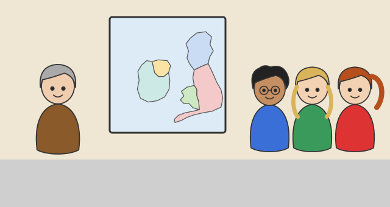

Die Karte: UK, Great Britain und Ireland
Mit einem KI-Tutor lernen
Ein KI-Tutor erklärt dir diese Seite und hilft dir bei den Aufgaben. Wähl deinen Assistenten:
Mit Claude öffnen Mit ChatGPT öffnen Mit Mistral Vibe öffnen
Du nutzt dein eigenes Konto beim Anbieter. Der Assistent ist kein Angebot von lernapps.net: lernapps liefert nur Inhalte und Aufgaben. Die Wahl gilt für alle Seiten, nur auf diesem Gerät.
Mr Hill hängt eine Karte auf

Von links: Mr Hill (graue Haare), Amir (Brille), Sophie (blonde Zöpfe), Ellie (roter Pferdeschwanz). Die Karte an der Wand ist eine Schemakarte, nicht genau nach Maßstab.
Quelle: eigene Zeichnung. Lizenz: CC-BY-4.0.In der Millbrook School hängt Mr Hill eine große Karte an die Wand. Auf der Seite davor hast du Vergleiche wiederholt. Bisher kennst du nur den Plan von Millbrook, mit Straßen und Läden. Jetzt zoomt der Plan heraus: Millbrook ist nur noch ein kleiner Punkt auf einer Karte mit ganzen Ländern und Inseln. Eine Schemakarte zeigt nur das Wichtigste und ist nicht genau nach Maßstab. Mr Hill zeigt auf den Punkt und erklärt, wo er liegt.
Aufgabe
Lösung
Millbrook liegt in England. richtige Antwort
is in heißt „liegt in“. Mr Hill sagt also, in welchem Teil Millbrook liegt.
Millbrook ist die Hauptstadt von England.
capital hat Mr Hill nicht gesagt. Er sagt nur, wo Millbrook liegt.
Millbrook liegt in Schottland.
Schottland heißt auf Englisch Scotland. Mr Hill sagt England.
Mr Hill sagt „Millbrook is in England“: Millbrook liegt in England.
Das kannst du danach: Du zeigst die Teile des Vereinigten Königreichs und ihre Hauptstädte auf der Karte. Du weißt, was UK, Great Britain und Ireland bedeuten.
Vier Teile, zwei Inseln
Das UK (United Kingdom, Vereinigtes Königreich) hat vier Teile: England, Scotland, Wales und Northern Ireland. Jeder Teil hat eine capital, eine Hauptstadt. Auf der Karte sind die Hauptstädte Punkte.

Die Britischen Inseln (Schemakarte, nicht genau nach Maßstab). Norden (N) ist oben. Jedes Gebiet hat eine eigene Farbe.
Quelle: eigene Zeichnung. Lizenz: CC-BY-4.0.Merke
- UK: der Staat mit den vier Teilen.
- Great Britain: eine Insel, auf der drei Teile des UK liegen.
- Ireland: die Insel im Westen und auch der Staat dort. Der Staat heißt auch Republic of Ireland und ist ein eigenes Land.
- Northern Ireland: der Nordosten der Insel Ireland. Er ist ein Teil des UK.
- British Isles: alle Inseln zusammen.
| Ausdruck | Bedeutung |
|---|---|
| capital | Hauptstadt |
| United Kingdom (UK) | Vereinigtes Königreich |
| Great Britain | die große Insel |
| island | Insel |
| Ireland | Irland (die Insel und der Staat) |
| Republic of Ireland | Republik Irland (der Staat) |
| British Isles | Britische Inseln |
Übung
Aufgabe
Lösung
Richtige Antwort: England – London; Scotland – Edinburgh; Wales – Cardiff; Northern Ireland – Belfast
London ist die Hauptstadt von England, Edinburgh von Scotland, Cardiff von Wales und Belfast von Northern Ireland. Dublin ist die Hauptstadt des Staates Ireland (Republic of Ireland) und liegt nicht im UK.
Aufgabe
Schau auf die Karte mit den Buchstaben und wähle das richtige Wort.

Die Britischen Inseln mit Buchstaben (Schemakarte, nicht genau nach Maßstab). Norden ist oben.
Quelle: eigene Zeichnung. Lizenz: CC-BY-4.0.Tipp
Suche zuerst die Insel im Westen und die Insel im Osten. Die Punkte sind die Hauptstädte.
- Das Gebiet mit dem Buchstaben C → C is ….
- Das Gebiet mit dem Buchstaben D → D is ….
- Die Hauptstadt des Gebiets B → The capital of B is ….
- Die Hauptstadt des Gebiets E → The capital of E is ….
Lösung
- C is Scotland.
- D is Wales.
- The capital of B is Belfast.
- The capital of E is Dublin.
Aufgabe
Lösung
Nein. Great Britain ist eine Insel, das UK ein Staat. Der Staat hat einen Teil mehr als die Insel. richtige Antwort
Great Britain ist die Insel mit England, Scotland und Wales. Northern Ireland liegt auf der Nachbarinsel Ireland und gehört trotzdem zum UK.
Ja. Great Britain ist ein anderer Name für das UK.
Das ist ein häufiger Fehler. Great Britain ist eine Insel, das UK ist ein Staat mit vier Teilen.
Nein. Great Britain ist nur England.
Great Britain ist größer als England. Auf der Insel liegen auch Scotland und Wales.
Nein. Great Britain ist die Insel im Westen.
Die Insel im Westen heißt Ireland. Great Britain ist die große Insel im Osten.
Das UK ist der Staat mit vier Teilen. Great Britain ist nur die große Insel mit England, Scotland und Wales. Northern Ireland gehört zum UK, liegt aber auf Ireland.
Aufgabe
Lösung
Richtige Antwort: Die Aussage stimmt nicht.
Dublin ist die Hauptstadt des Staates Ireland. Die Hauptstadt von Northern Ireland ist Belfast.
Aufgabe
Schreibe den Satz auf Englisch.
Tipp
Für „liegt in“ brauchst du is in. Für „Hauptstadt von“ brauchst du the capital of.
- Edinburgh liegt in Schottland.
- Belfast liegt in Nordirland.
- Cardiff ist die Hauptstadt von Wales.
- Dublin ist die Hauptstadt von Irland.
Lösung
- Edinburgh is in Scotland.
- Belfast is in Northern Ireland.
- Cardiff is the capital of Wales.
- Dublin is the capital of the Republic of Ireland. (auch richtig: Dublin is the capital of Ireland.)
Aufgabe
Hör zu und schreibe, was du hörst.
- KI
- KI
- KI
Lösung
- Wales is next to England.
- Ellie lives in a small town in England.
- Belfast and Dublin are on the same island.
Selbst sagen und schreiben
Aufgabe
Hör zu, sprich nach und nimm dich auf. Vergleiche dann mit dem Original.
Tipp
Hör den Satz zuerst. Sprich dann langsam nach und achte auf Great Britain, capital und classroom.
- Great Britain is a big island.KI
- London is the capital of the United Kingdom.KI
- Mr Hill hangs a big map in the classroom.KI
Zum Aufnehmen braucht diese Aufgabe JavaScript. Die Beispiele kannst du auch ohne anhören.
Lösung
- Great Britain is a big island.
- London is the capital of the United Kingdom.
- Mr Hill hangs a big map in the classroom.
Offene Aufgabe
Ein Gast aus Deutschland schaut auf die Karte und fragt: „What is the UK?“ Erkläre ihm die Karte in zwei bis vier Sätzen auf Englisch.
Eine gute Antwort enthält:
- Das UK hat vier Teile, und sie sind genannt (England, Scotland, Wales, Northern Ireland). Nachlesen
- Great Britain ist die große Insel. Northern Ireland liegt auf der Insel Ireland. Nachlesen
- Eine Hauptstadt wird richtig genannt, zum Beispiel London oder Belfast. Nachlesen
- Es sind ganze Sätze mit Punkt am Ende. (Form)
Lösung
The UK has four parts: England, Scotland, Wales and Northern Ireland. England, Scotland and Wales are on the island of Great Britain. Northern Ireland is on the island of Ireland. London is the capital of England.
Weiter nach Cornwall
In den Herbstferien fahren die Parkers an die Küste. Peter fragt, wo das eigentlich ist, und Mrs Parker holt eine Karte. Wo liegt der Ort auf der Karte? Das erfährst du auf der nächsten Seite.